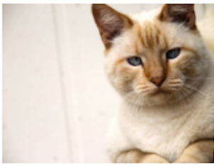

About Me
My name is Kelsey Beffel. I grew up in a beautiful little house in San Francisco with my parents, older brother, and twin sister. San Francisco was my playground until I moved to Seattle to go to college in 2010. My degree is in Busienss Economics with a Spanish minor from Seattle University.
After graduating I became an underwriter at Liberty Mutual. In 2017 I was aceped into a Liberty run program for employees outside of Commercial Technology to transition into software developer positions. Currently I am an associate software developer at Liberty Mutual.